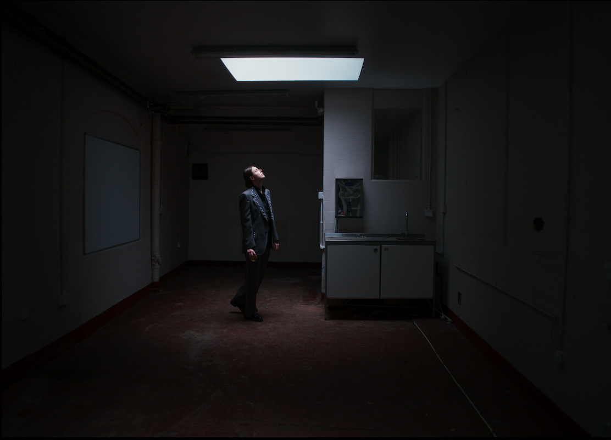
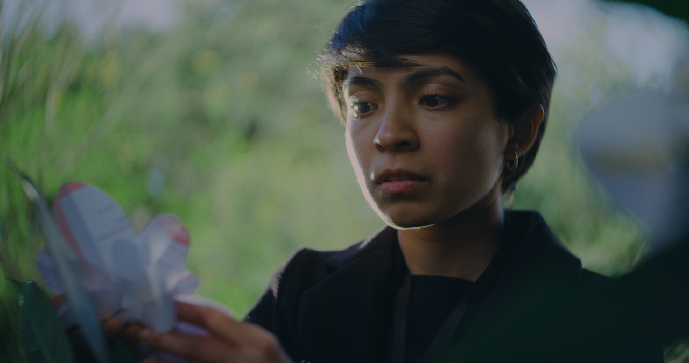
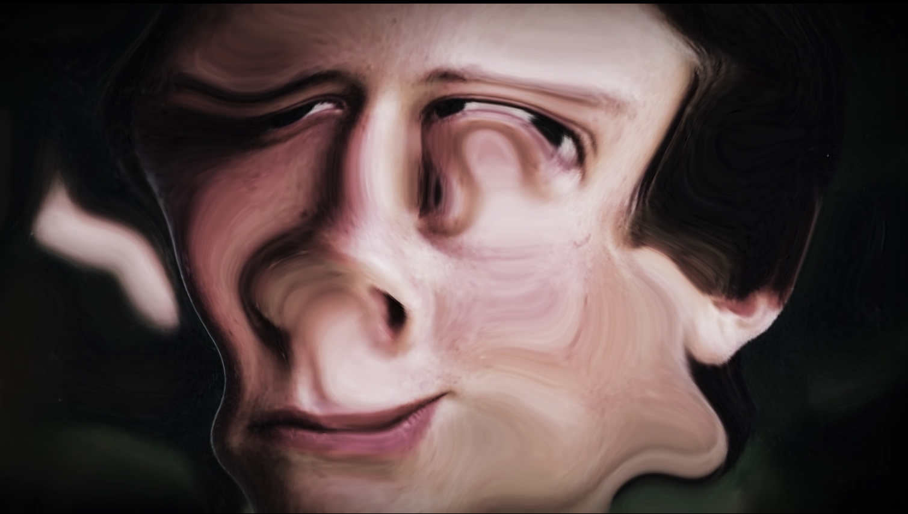
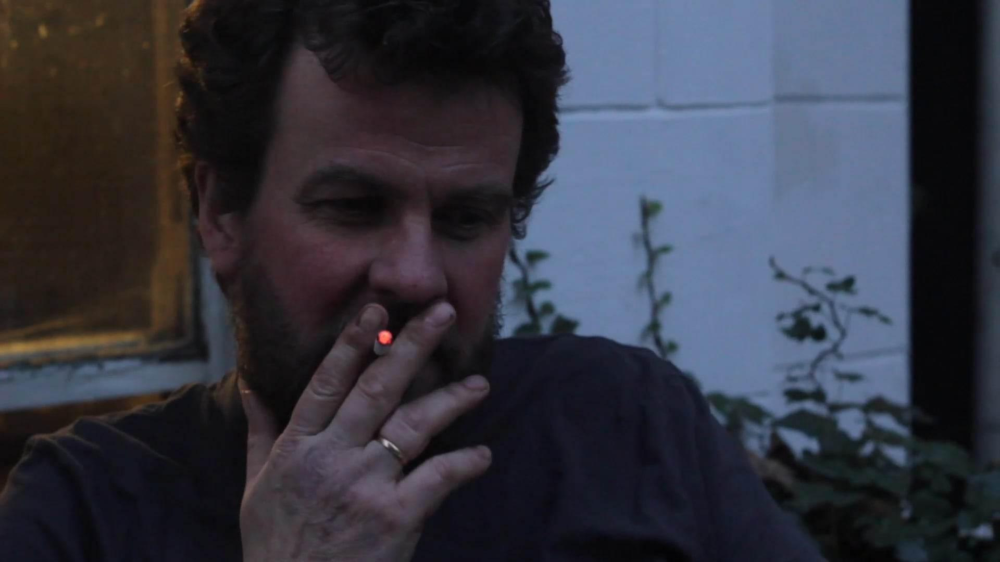
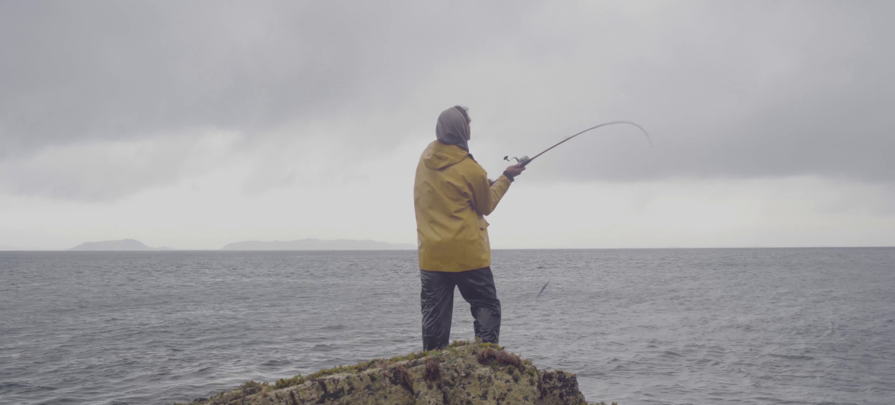
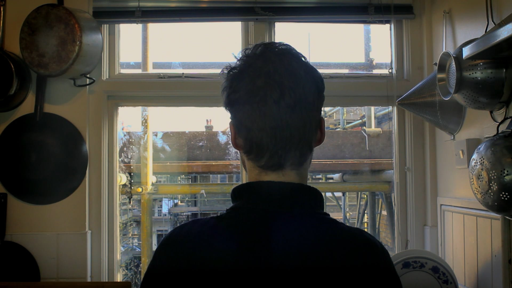
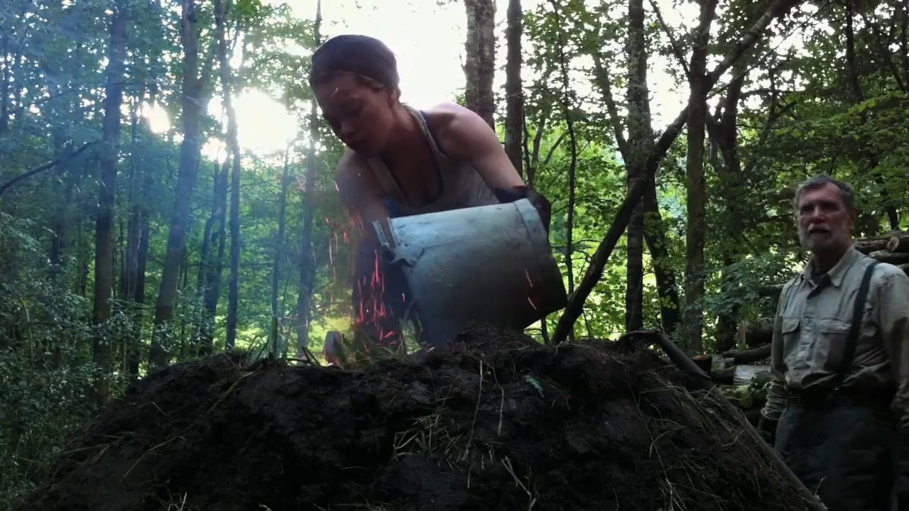

The Priest (2027)

Guardian Angel (2025)

Antecedent Wayfinder (2024)

Spectrum and Decay (2024)

Final Demand (2023)
Fixing a Hole (2022)

One Day as I Was Driving Home (2021)
On Paper (2021)

Come on Elon (2021)

The Longest Journey Is the Journey Inward (2020)

Sarkology (2019)

How I Got Lost (2014)

Olympic Sized (2013)
